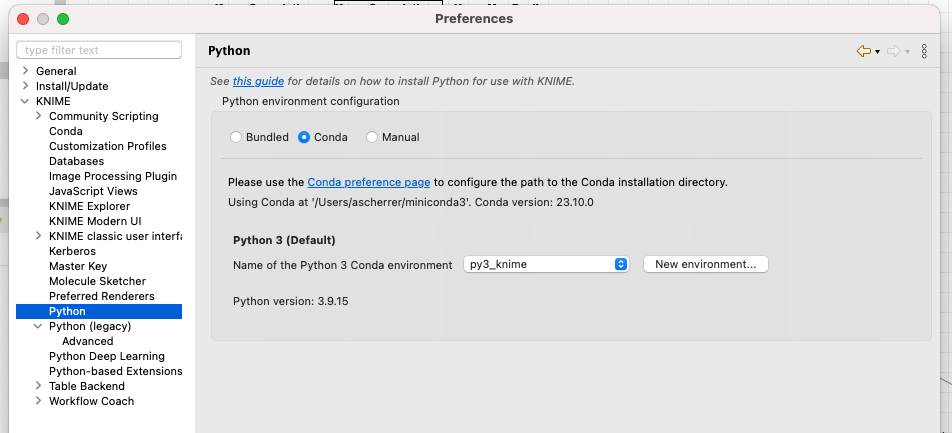
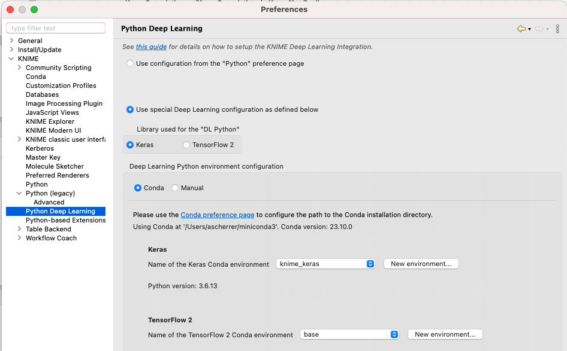

Using knime with Python
To use Knime and Keras/Tensorflow deep learning libraries, you need to setup Python environments with particular versions of each library.
You should do so using anaconda or miniconda.
First install anaconda or miniconda, and then go to Knime settings.
Under Python, click `Create new environment``

Package list on my installation
Package Version
------------------------- ------------
appnope 0.1.3
asammdf 5.19.14
asttokens 2.4.1
attrs 23.1.0
canmatrix 0.9.5
cchardet 2.1.7
certifi 2023.11.17
click 8.1.7
contourpy 1.2.0
cycler 0.12.1
decorator 5.1.1
exceptiongroup 1.2.0
executing 2.0.1
fastjsonschema 2.19.0
flatbuffers 1.12
fonttools 4.45.1
future 0.18.3
h5py 2.10.0
importlib-resources 6.1.1
ipython 8.17.2
jedi 0.18.1
JPype1 1.4.1
jsonschema 4.20.0
jsonschema-specifications 2023.11.1
jupyter_core 5.5.0
kiwisolver 1.4.5
lxml 4.9.3
lz4 4.3.2
matplotlib 3.8.2
matplotlib-inline 0.1.6
munkres 1.1.4
natsort 8.4.0
nbformat 5.9.2
numexpr 2.8.7
numpy 1.26.0
packaging 23.2
pandas 2.1.3
parso 0.8.3
pexpect 4.8.0
pickleshare 0.7.5
Pillow 10.1.0
pip 23.3.1
pkgutil_resolve_name 1.3.10
platformdirs 4.0.0
prompt-toolkit 3.0.41
protobuf 4.21.12
ptyprocess 0.7.0
pure-eval 0.2.2
py4j 0.10.9.7
pyarrow 6.0.2
Pygments 2.17.2
pyparsing 3.1.1
python-dateutil 2.8.2
pytz 2023.3.post1
PyYAML 6.0.1
referencing 0.31.0
rpds-py 0.13.1
scipy 1.11.3
setuptools 68.2.2
six 1.16.0
stack-data 0.6.2
tornado 6.3.3
traitlets 5.13.0
typing_extensions 4.8.0
tzdata 2023.3
unicodedata2 15.1.0
wcwidth 0.2.12
wheel 0.41.3
xlrd 2.0.1
XlsxWriter 3.1.9
xlwt 1.3.0
zipp 3.17.0
Knime environnement for Keras
For Keras/Tensorflow2 different environment are required.
You need to install Deep learning extension and go to Settings.
Under Python Deep Learning you can do the same as above and create new environments.

But it will most likely fail for apple silicon macs!
Apple silicon (M1/M2) mac users
For Apple Silicon macs, you will need to create an environment using Intel reposititory, to do that you need to prefix conda commands with: CONDA_SUBDIR=osx-64
You will also need to install Rosetta2
CONDA_SUBDIR=osx-64 conda create -n py3_knime_keras python=3.6
conda activate knime_keras
conda install h5py=2.8 tensorflow-mkl=1.12 keras=2.2.4
conda install pandas=0.23.0
Package list on my installation for Keras
Package Version
------------------- ---------
absl-py 0.15.0
astor 0.8.1
certifi 2021.5.30
coverage 5.5
Cython 0.29.24
dataclasses 0.8
gast 0.5.3
grpcio 1.36.1
h5py 2.8.0
importlib-metadata 4.8.1
Keras 2.2.4
Keras-Applications 1.0.8
Keras-Preprocessing 1.1.2
Markdown 3.3.4
numpy 1.19.2
pandas 0.23.0
pip 21.2.2
protobuf 3.17.2
python-dateutil 2.8.2
pytz 2021.3
PyYAML 5.4.1
scipy 1.5.2
setuptools 58.0.4
six 1.16.0
tensorboard 1.12.2
tensorflow 1.12.0
termcolor 1.1.0
typing_extensions 4.1.1
Werkzeug 2.0.3
wheel 0.37.1
zipp 3.6.0